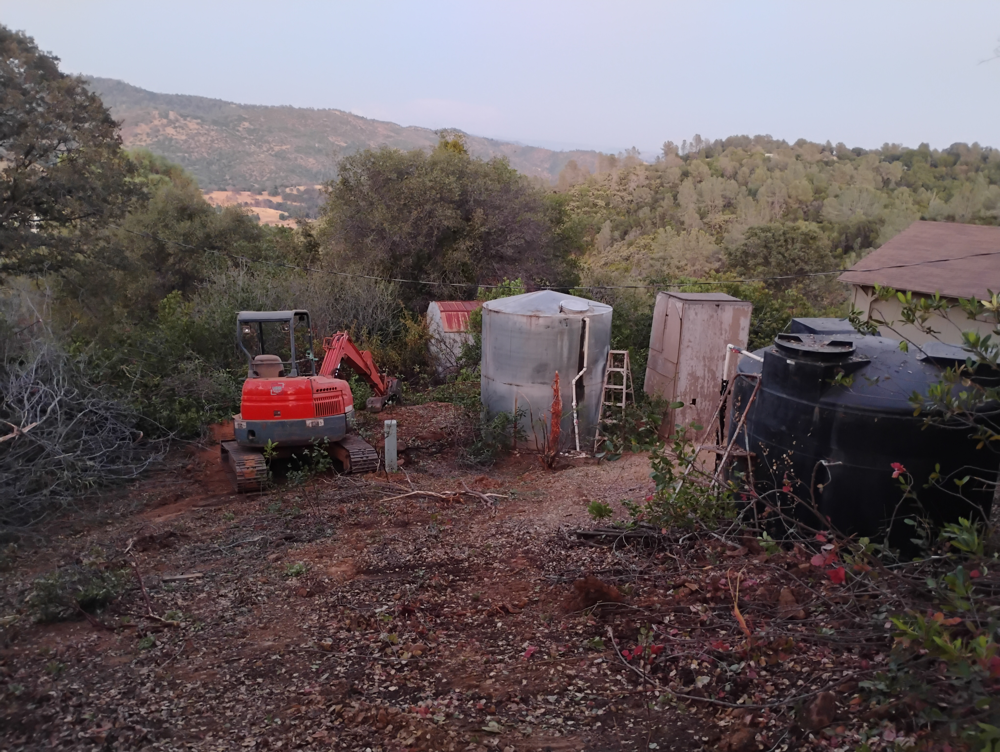

Before & After Case Study • Brush Clearing • Defensible Space • Mariposa County
Access improvement • Water tank clearing • Hazardous vegetation removal • Clean finish
Related: Brush Clearing in Mariposa • All Service Areas
This brush clearing and defensible space project in Mariposa, CA focused on improving driveway access, clearing hazardous vegetation on a steep hillside, and opening access around water tanks and key property areas. Before the work, dense brush and overgrowth created limited access and higher wildfire risk. After completion, the property had clear access, reduced fire fuel, and a cleaner, safer layout built for rural terrain.
Tap/click images to zoom in your browser.
Before clearing, the property had dense brush along the driveway and heavy vegetation on the hillside. Access for vehicles and emergency response was limited, and the dry growth increased fire fuel around key areas of the property.
.jpg)

This project required careful clearing due to steep terrain and access constraints. Our focus was removing hazardous vegetation while improving usable access and keeping the site clean and stable.
See our main service page: Brush Clearing & Defensible Space in Mariposa →
After completion, the driveway access and hillside areas were cleared, vegetation fuel was reduced, and the water tank area was opened up for safer access. The finished site is cleaner, safer, and more usable.




DCB provides brush clearing, defensible space, and land clearing built for rural terrain. Fast response, clear scope, clean results.
See also: Brush Clearing Mariposa • Service Areas